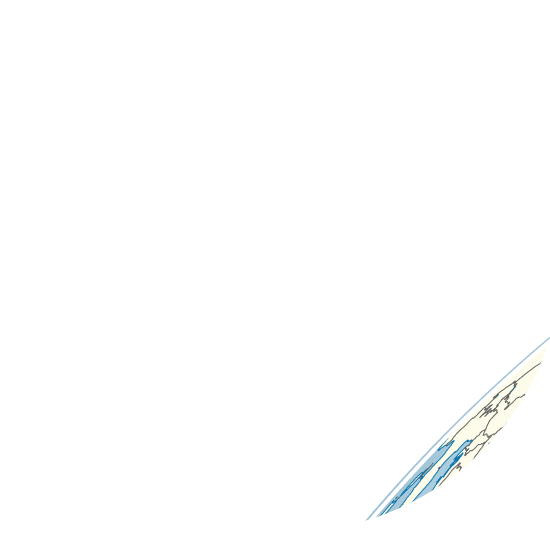
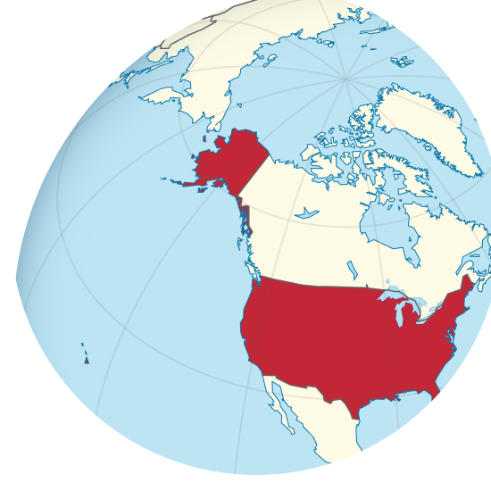

Celebrations

Vietnamese Lunar New Year starts with people buying kumquat trees and peach blossoms. The festival lasts 3 days, and it is the biggest event of the year.
Vietnamese people return to their hometowns in order to celebrate this holiday with their relatives and pay respect to their ancestors together.
Children and adults play games such as cua cá cọp, which is a traditional gambling game. Games such as Poker and Blackjack are also played for money, usually from the lì xì they receive from their elders.
They also wear their traditional clothes during this period, called áo dài.
Vietnamese people return to their hometowns in order to celebrate this holiday with their relatives and pay respect to their ancestors together.
Children and adults play games such as cua cá cọp, which is a traditional gambling game. Games such as Poker and Blackjack are also played for money, usually from the lì xì they receive from their elders.
They also wear their traditional clothes during this period, called áo dài.
Seollal, the Korean New Year is a deeply family-centered holiday focused on paying respect to ancestors, strengthening family bonds, and setting intentions for the year ahead. A key tradition is Charye, where families prepare an elaborate table of food as an offering to their ancestors.
In this festival, they eat tteokguk, rice cake soup, to “add one year to their age”
They wear traditional clothes called hanbok during this period.
In this festival, they eat tteokguk, rice cake soup, to “add one year to their age”
They wear traditional clothes called hanbok during this period.

The US has one of the largest Chinese/Asian diasporas in cities such as San Francisco, Los Angeles, New York City. Families oftern go to temples to pray for good fortune.
Due to their distance from their roots, they are often not able to visit ancestral tombs.
Parades such as the San Francisco CNY parade are one of the largest celebrations in the world.
Many who celebrate adorn their traditional clothes, such as the Chinese qipao.